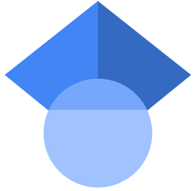

- Binary Evolution
- Mass-loss
- Red supergiants
- Gravitational Wave Progenitors
- Nucleosynthesis
- Interacting Supernovae (CSM)
- Interacting Supernovae (with a binary companion)
- Nucleosynthesis
- Connecting progenitors to transients
Bonn Group
Norbert Langer
Abel Schootemeijer
Caroline Mannes
Garching Group
Selma de Mink
Harim JIn
Ruggero Valli
External active collaborators
Luc Dessart
Avishay Gal-Yam
Daniel Jadlovský
Xiao-Tian Xu
Thomas Moore
Hubble Ultra Deep Field
Credit: NASA, ESA, and S. Beckwith (STScI) and the HUDF Team
First Author Works
5/2026
Neutron star-companion interaction in core collapse supernovae.
Population synthesis based on detailed binary evolution models
Andrea Ercolino, Norbert Langer, Avishay Gal-Yam, & 6 others
Submitted to Astronomy & Astrophysics - Preprint available on arXiv:2605.21062
2/2026
The demographics of core-collapse supernovae.
The role of binary evolution and interaction with the circumstellar medium.
Andrea Ercolino, Harim Jin, Norbert Langer, & 3 others
Published in Astronomy & Astrophysics, 706, A169
4/2025
Mass-transferring binary stars as progenitors of interacting hydrogen-free supernovae
Andrea Ercolino, Harim Jin, Norbert Langer, Luc Dessart
Published in Astronomy & Astrophysics, 696, A103
Artist impression of SN2022jli - Credit: ESO/L. Calçada
Selected co-authored works
9/2025
Hidden massive eclipsing binaries in red supergiant systems:
The hierarchical triple system KQ Puppis and other candidates
Daniel Jadlovský, Laszlo Molnár, Andrea Ercolino & 24 others
Accepted for Pubblication to Astronomy & Astrophysics - Preprint available on arXiv:2509.25168
2/2026
A comprehensive grid of massive binary evolution models for the Galaxy:
Surface properties of post-mass-transfer stars
Harim Jin, Norbert Langer, Andrea Ercolino, Selma de Mink
Published in Astronomy & Astrophysics, 707, A56
5/2024
A sequence of Type Ib, IIb, II-L, and II-P supernovae from binary-star progenitors with varying initial separations
Luc Dessart, Claudia P. Gutiérrez, Andrea Ercolino, Harim Jin, Norbert Langer
Published in Astronomy & Astrophysics, 685, A169
3/2024
Evidence for Evolved Stellar Binary Mergers in Observed B-type Blue Supergiants
Athira Menon, Andrea Ercolino, Miguel A. Urbaneja, & 8 others
Published in
The Astrophysical Journal, 963(2), L42
You can find the complete list of publications I co-authored below
NASA ADS
SCI-EXPLORER
Google Scholar

Betelgeuse: Effect of Companion Star Wake
Credit: NASA, ESA, Elizabeth Wheatley (STScI); Science: Andrea Dupree (CfA)
Conferences & Talks
Invited talks
European Astronomical Society (EAS) Meeting 2026
29/6-3/7 2026 - SwissTech Convention Center, Lausanne, Switzerland
Binary evolution and the diversity of core-collapse supernovae
[Slides]
Contributed & Flash talks
GECO-LAM: Extragalactic Transient Universe
6-10/7 2026 - Aix-Marseille Université, Marseille, France
Contributed: Post-explosion binary interaction in supernovae: population models inspired by SN2022jli
[
Recording] [Slides]
International Astronomical Union (IAU) Symposium 406: Future landscape of astrophysical transients
18-22/05/2026 - Hotel Kakola/Baltic Sea Cruise, Turku, Finland
Contributed: Progenitor models of supernovae interacting with their binary companions
[Slides]
Stellar Populations and their Explosions: Bridging the Gap
10-14/11/2025 - Ringberg Castle, Kreuth, Germany
Contributed: The demographics of core-collapse supernovae from models of single and binary stars
[Slides]
VLT-FLAMES Tarantula Survey Meeting 2024
16-18/9/2024 - ESAC, Madrid, Spain
Flash: Interacting supernovae from massive mass-transferring binaries
Annual meeting of the Astronomische Gesellschaft (AG) 2024
9-13/9/2024 - Universität zu Köln, Cologne, Germany
Contributed: Interacting supernovae from wide massive binaries
From discovery to a population: benchmarking stripped stars and companions
22-26/7/2024 - Lorentz Center - Universiteit Leiden, Leiden, Netherlands
Attended Online
Flash: Interacting H-free supernovae from binary-stripped stars
LIAC41: The eventful life of massive star multiples
15-19/7/2024 - Université de Liège, Lìege, Belgium
Contributed: Interacting supernovae from wide massive binary systems
[Proceedings]
Stable Mass Transfer in Binaries: from onset to remnants
11-13/3/2024 - Flatiron Institute - Simons Fundation, New York City, USA
Contributed: Interacting supernovae from massive mass-transferring binaries
[Recording]
Participant
3, 2, 1: Massive Triples, Binaries and Mergers
17-21/7/2023 - KU Leuven, Leuven, Belgium
VLT-FLAMES Tarantula Survey Meeting 2023
27-29/3/2023 - Max Planck Intitut für Astrophysik, Garching, Germany
Visits, Seminars & Informal talks
Max Planck Institut für Astrophysik (MPA) - Supernova Meeting
25/6/2026 - Garching, Germany
Online Meeting, Invited by Dr. Daniel Kresse
Contribution: Population models of supernovae showing ongoing binary interaction
KU Leuven
11-13/6/2025 - Leuven, Belgium
Visit+Meeting, Invited by Prof. Dr. Eva Laplace
Group meeting: Population predictions of interacting core-collapse supernovae from binary systems
Heidelberg Institute for Theoretical Studies (HITS)
17-21/3/2025 -Heidelberg, Germany
Visit+Meeting, Invited by Prof. Dr. Fabian Schneider
Group meeting: Population predictions of interacting supernovae from binary mass transfer and their features
PEPPER Meeting
13/1/2025 - Online
Online Meeting, invited by Dr. Andrea Chiavassa
Contribution: Can Red Supergiants in binaries give rise to interacting supernovae?
Max Planck Institut für Astrophysik (MPA) - Supernova Meeting
12/12/2024 - Garching, Germany
Meeting , invited by Dr. Gèza Csörnyei
Contribution: The stripped-star progenitors of interacting H-poor supernovae
European Southern Observatory (ESO) - Stellar Coffee and Planetary Tea
9/12/2024 - Garching, Germany
Meeting, invited by Daniel Jadlovský
Contribution: the red-supergiant progenitors of interacting supernovae
Max Planck Institut für Astrophysik
5/11 - 14/12 2024 - Garching, Germany
Visit+Meetings, invited by Prof. Dr. Selma de Mink
Meeting: the effects of mass transfer on core-collapse supernovae
Heidelberg Institute for Theoretical Studies (HITS)
14-16/10/2024 - Heidelberg, Germany
Visit+Meeting, invited by Prof. Dr. Fabian Schneider
Chats on projects